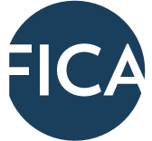

<link rel="import" href="../bower_components/polymer/polymer.html">
<link rel="import" href="shared-styles.html">
<dom-module id="guest-content">
  <template>
    <style include="shared-styles">
      :host {
      @apply(--layout-horizontal);
      @apply(--layout-wrap);
      margin: 0 auto;
      font-size:16px;
      color:#fff;
      padding-bottom: 40px;
      }
      .column {
      -webkit-flex: 1 1 50%;
      flex: 1 1 50%;
      width: 50%;
      box-sizing: border-box;
      }
      .content {
        @apply(--layout-vertical);
        @apply(--layout-center-center);
        text-align:center;
        padding-top:60px;
        width:100%;
      }
      .bullets{
        text-align:left;
      }
      .big{
        font-size:22px;
      }
    </style>
    <div class="column">
      <div class="content">
        
        <div class="bold mTop20 big">About the Cost of Funds Tool</div>
        <div class="mTop20">We have met with over 1,000 banks and their CEOs,<br />CFOs, treasurers and board members. Inevitably, we<br />are asked to provide our view<br />of deposit rates and bank cost structures.</div>
        <div class="mTop20">We have developed this simple application that<br />allocates costs using your quarterly filings to<br />determine true cost of deposit funding. Based on our<br />analysis across 100s of banks, retail deposits are on<br />average 100bps higher than FICA deposits!</div>
        <div class="mTop20">Learn more – FICA Account</div>
        <div></div>
      </div>
    </div>
    <div class="column">
      <div class="content">
        
        <div class="bold mTop20 big">About the Federally Insured Cash Account&reg;</div>
        <div class="mTop20">The Federally Insured Cash Account (FICA&reg;) is a<br />program for banks that enables them to access<br />flexible funding from a diversified set of clients (over<br />1,100 clients at last count!). Many of our banks and<br />their regulators treat FICA as core deposits given<br />their diversified depositor base and stickier funding.<br />The benefits of FICA deposit program include:</div>
        <div class="bullets">
          <ul>
            <li>Access funding when you need it</li>
            <li>Return funding when you don’t</li>
            <li>Competitive rate relative to branch / retail deposits</li>
          </ul>
        </div>
        <div></div>
      </div>
    </div>
  </template>
  <script>
  Polymer({
    is: 'guest-content',
    properties: {},
    listeners: {}
  });
  </script>
</dom-module>
